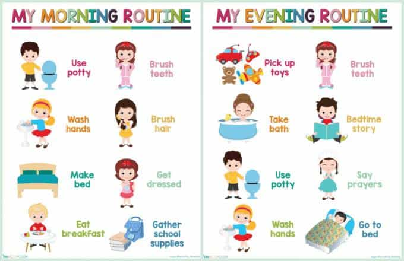

Daryush "Roosh" Valizadeh created ROK in October 2012. You can visit his blog at RooshV.com or follow him on Twitter and Facebook.


Recently I spent time with extended family. A common question was, “Why aren’t you married yet?” I replied by asking them how much time they had for me to explain all the reasons. While it’s easy to portray modern marriage as a bad deal, most of my reasons are purely individual in nature.
Here are six reasons why I’m not cut out for marriage…
I only like being social for 2-4 hours a day, preferably at night. Once I fulfill a day’s social interaction needs, I power down and rather not talk anymore.
The problem when living with a woman is that they want to be social as soon as they get up and remain social for the rest of the day. They talk to me, ask me questions, and generally want to feel like they are living with another human being. Even worse, I’m exceedingly moody and sometimes want to go a day or two without talking to anyone. My wife would probably find this intolerable.
Possible solution: find an introverted girl who is less social than me
A big reason I don’t want to get married is that I understand women. Most women are driven by emotional states and social trends—she’s your woman as much as she is everyone else’s. If my woman doesn’t have traditional values, I’ll be forced to lay down rules that block the serpent from tempting her, but that will lead her to resent me for limiting her freedom. She’ll rebel and pick senseless fights with me. A woman may want a strong man to feel maximum attraction, but she doesn’t want him to limit her lifestyle options.
Possible solution: find a traditional woman who already knows how to be reasonably good
While I can fall asleep easily, I wake up often and have trouble going back to sleep. Reading before bed, putting on white noise, and wearing a night mask help only somewhat. The problem is that women who sleep in my bed want to touch me or cuddle, but this causes me to wake up, destroying my sleep further. With one girlfriend, I floated the idea of having separate bedrooms upon marriage. Needless to say, we’re no longer together.
Possible solution: build a pillow wall in the middle of the bed so she doesn’t try to sneak in any touches while I’m sleeping

I’m an easy-going and flexible guy when it comes to social interactions, and many girls I’ve slept with would probably say I’m “fun,” but I’m a nightmare to live with. I want everything done my way with little deviation. My tea has to be a certain temperature, my bread has to be sliced at an exact thickness, and the sunlight coming into my room has to be just right.
I tried teaching previous girlfriends how to make things the way I prefer, but they just can’t duplicate my perfection. I firmly believe that I do things in the best way, so I see no need to compromise on that.
Possible solution: find a younger girl without rigid living habits who doesn’t mind adopting mine
Satisfy me Rooshiepoo!
Let’s be honest: most women take way more than they give, and all they really give is sex and basic companionship. I don’t mind giving everything I have to the woman I love, but if she’s not actively reciprocating to make my life better, what’s the point of marriage?
Very few women are trained these days to improve the lives of men. In fact, they are trained to believe men are the enemy and they are entitled to some sort of reparation package just because they were born a woman.
Possible solution: find a traditional woman who was trained to please her husband
My job requires a high degree of concentration and focus. When things get too loud, I’m unable to produce such fine writing as what you’re enjoying right now. The problem is that women prefer a background loudness in their lives so they don’t feel alone. They wake up and want to watch YouTube videos, put on music, or talk on the phone. I can’t work under those conditions, especially during the day. In the evening, a woman can make all the noise she wants, especially in bed, but upon waking I need complete and utter silence.
Possible solution: buy a house so big that I can’t hear my wife (and children) while writing or meditating in my study
Note how I didn’t mention becoming bored sleeping with the same woman. A lot of other men have this problem, but if I get horny, which still happens, I’m more than eager to put it in her after removing the wall of pillows between us.
All of the reasons I mentioned are not insurmountable obstacles, and the solution may be as simple as finding a young, shy, traditional, virgin girl raised on a farm, but I must admit that the kind of man I am doesn’t lend well to the compromises that marriage demands. If I find a woman who can handle the quirks above, she may very well be the one.
The above article was first published on Roosh V.
Read Next: The Manipulated Man